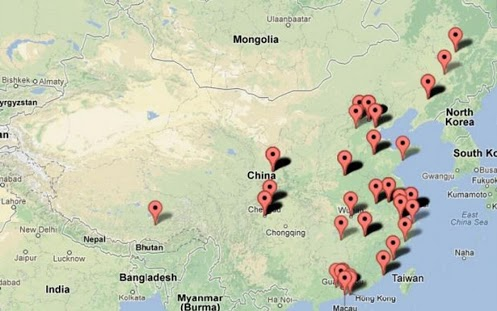

[转]科学上网原理
背景
在很久很久以前，我们访问各种网站都是简单而直接的，用户的请求通过互联网发送到服务提供方，服务提供方直接将信息反馈给用户。

后来，GFW 就出现了，他像一个收过路费的强盗一样夹在了在用户和服务之间，每当用户需要获取信息，都经过了 GFW，GFW将它不喜欢的内容统统过滤掉，于是客户当触发 GFW 的过滤规则的时候，就会收到 Connection Reset 这样的响应内容，而无法接收到正常的内容。

GFW 内部结构：

GFW 列表可以参考这里：gfwlist/gfwlist

聪明的人们想到了利用境外服务器代理的方法来绕过 GFW 的过滤，其中包含了各种HTTP代理服务、Socks服务、VPN服务等。
SSH Tunnel
SSH（Secure Shell）是一个提供数据通信安全、远程登录、远程指令执行等功能的安全网络协议，由芬兰赫尔辛基大学研究员Tatu Ylönen，于1995年提出，其目的是用于替代非安全的Telnet、rsh、rexec等远程Shell协议。之后SSH发展了两个大版本SSH-1和SSH-2。
想深入了解SSH的原理，可以查看 O‘RELLY的 《SSH: The Secure Shell - The Definitive Guide》，这是一本非常不错的书。
那么我们来看看搭建一个SSH隧道翻墙，究竟有多简单。首先你需要有一台支持SSH的墙外服务器，此服务器啥都不需要，只要能SSH连接即可。
客户端SSH执行如下命令：
ssh -D 7001 username@remote-host
上述命令中-D表示动态绑定，7001表示本地SOCKS代理的侦听端口，可以改成别的，后面的 username@remote-host就是你登录远程服务器的用户名和主机。当然，这个命令后会提示输入密码，就是username这个用户的密码（除非你配置了SSH公钥认证，可以不输入密码），这样隧道就打通了。

- 首先用户和境外服务器基于 ssh 建立起一条加密的通道 (1)
- 用户通过建立起的隧道进行代理，通过 ssh server 向真实的服务发起请求 (2-3)
- 服务通过 ssh server，再通过创建好的隧道返回给用户 (4-5)
由于 ssh 本身就是基于 RSA 加密技术，所以 GFW 无法从数据传输的过程中的加密数据内容进行关键词分析，避免了被重置链接的问题，但由于创建隧道和数据传输的过程中，ssh 本身的特征是明显的，所以 GFW 一度通过分析连接的特征进行干扰，导致 ssh 存在被定向进行干扰的问题。
至于干扰的原理，shadowsocks的作者 @clowwindy 认为：
从校长最近的论文上上看，GFW 最近弄的是先检测首部特征判断 SSL 和 SSH，然后统计包长度和方向，用实现训练好的模型去判断承载的流量是否为 HTTP。如果你用 SSH 翻墙，或者你的操作行为发的数据包过于接近 HTTP，就会被 reset。反过来，如果你想用 SSH 翻墙，只要在用来翻墙的那个 ssh 连接里做些别的操作（比如反复 tail 一个长文件，这样会不停的输出；或者用管道不停的往 ssh 里写命令，这样会不停的输入），就可以让这个模型失效，从而不会被判定为翻墙。
VPN
随着时代的发展以及企业规模的发展壮大，企业网络也在不断发生变化。例如，一家总部设在北京的企业，可能会在上海、广州和深圳等地都设有分支机构，因此需要把各个分支机构连接在一起，以便共享资源、协同工作，提高工作效率。但传统的专线联网方式价格昂贵，一般中小企业难以负担。这时低成本的VPN技术就孕育而生了。VPN（Virtual Private Network）即虚拟专用网络，它可以利用廉价接入的公共网络（主要使用Inter-net）来传输私有数据，相较于传统的专线连网方式具有成本优势，因此被很多企业和电信运营商采用。
VPN 比shadowsocks更加底层，它通过操作系统的接口直接虚拟出一张网卡，后续整个操作系统的网络通讯都将通过这张虚拟的网卡进行收发。这和任何一个代理的实现思路都差不多，应用层并不知道网卡是虚拟的，这样vpn虚拟网卡将以中间人的身份对数据进行加工，从而实现各种神奇的效果。具体来说，vpn是通过编写一套网卡驱动并注册到操作系统实现的虚拟网卡，这样数据只要经过网卡收发就可以进行拦截处理。

VPN和SSH隧道翻墙有如下区别：
- VPN的设置是全局的，即电脑一旦挂上VPN，所有的联网程序都将自动使用VPN；而建立好SSH隧道后，需要程序设定使用隧道才会使用隧道联网。
- 如果使用商用的VPN一般要花钱，如果自己搭，VPN的搭建难度大于SSH隧道。因为SSH隧道只要一台可以SSH的服务器即可，根本不需要在服务器上配置任何东西。
- vpn在IP层工作，而shadowsocks在TCP层工作。
shadowsocks
简单理解的话，shadowsocks 是将原来 ssh 创建的 Socks5 协议拆开成 server 端和 client 端，所以下面这个原理图基本上和利用 ssh tunnel 大致类似。

- 1、6) 客户端发出的请求基于 Socks5 协议跟 ss-local 端进行通讯，由于这个 ss-local 一般是本机或路由器或局域网的其他机器，不经过 GFW，所以解决了上面被 GFW 通过特征分析进行干扰的问题
- 2、5) ss-local 和 ss-server 两端通过多种可选的加密方法进行通讯，经过 GFW 的时候是常规的TCP包，没有明显的特征码而且 GFW 也无法对通讯数据进行解密
- 3、4) ss-server 将收到的加密数据进行解密，还原原来的请求，再发送到用户需要访问的服务，获取响应原路返回
PAC
代理自动配置（Proxy auto-config，简称PAC） 是一种网页浏览器技术，用于定义浏览器该如何自动选择适当的代理服务器来访问一个网址。
一个PAC文件包含一个JavaScript形式的函数 FindProxyForURL(url, host)。这个函数返回一个包含一个或多个访问规则的字符串。用户代理根据这些规则适用一个特定的代理其或者直接访问。当一个代理服务器无法响应的时候，多个访问规则提供了其他的后备访问方法。浏览器在访问其他页面以前，首先访问这个PAC文件。PAC文件中的URL可能是手工配置的，也可能是是通过网页的 网络代理自发现协议（Web Proxy Autodiscovery Protocol） 自动配置的。
上面是从维基百科摘录的关于PAC的解释，我做了一个简单的图片解释什么是PAC：

简单的讲，PAC就是一种配置，它能让你的浏览器智能判断哪些网站走代理，哪些不需要走代理。点击 Shadowsocks 的菜单，选择 编辑自动模式的 PAC，如下图


在上面的目录下有两个文件，一个是 gfwlist.js，还有一个是
user-rule.txt,确保当前的模式为自动代理模式，打开系统设置-->网络，点击高级，查看代理选项卡，如下图

Shadowsocks全局模式与PAC模式的区别
Shadowsocks 的全局模式，是设置你的系统代理的代理服务器，使你的所有http/socks数据经过代理服务器的转发送出。而只有支持 socks 5或者使用系统代理的软件才能使用 Shadowsocks（一般的浏览器都是默认使用系统代理）。
而PAC模式就是会在你连接网站的时候读取PAC文件里的规则，来确定你访问的网站有没有被墙，如果符合，那就会使用代理服务器连接网站，而PAC列表一般都是从 GFWList 更新的。GFWList 定期会更新被墙的网站（不过一般挺慢的）。
简单地说，在全局模式下，所有网站默认走代理。而PAC模式是只有被墙的才会走代理，推荐PAC模式，如果PAC模式无法访问一些网站，就换全局模式试试，一般是因为PAC更新不及时（也可能是GFWList更新不及时）导致的。
还有，说一下Chrome不需要 Proxy SwitchyOmega 和 Proxy SwitchySharp 插件，这两个插件的作用就是，快速切换代理，判断网站需不需要使用某个代理的（shadowsocks已经有pac模式了，所以不需要这个）。如果你只用shadowsocks的话，就不需要这个插件了！
经过代理服务器的IP会被更换。连接 Shadowsocks 需要知道IP、端口、账号密码和加密方式。但是Shadowsocks因为可以自由换端口，所以定期换端口就可以有效避免IP被封！
Socks代理和http代理的区别
Socks代理
本地浏览器SOCKS服务器通常是用来做代理的，它通过TCP连接把目标主机和客户端连接在一起， 并转发所有的流量。SOCKS代理能在任何端口，任何协议下运行（额，好想有点不对， 这货是运行在session层，所以在他之下的层他就无法代理了）。SOCKS V4只支持 TCP连接，而SOCKS V5在其基础上增加了安全认证以及对UDP协议的支持（也就是说， SOCKS5支持密码认证以及转发UDP流量，注意，HTTP是不支持转发UDP的）。
SOCKS代理在任何情况下都不会中断server与client之间的数据（这是由这种协议的 特性决定的，毕竟非明文，但是在SOCKS代理服务器上还是可以还原出TCP和UDP的原始 流量的），当你的防火墙不允许你上网的时候，你就可以通过SOCKS代理来上网（这里的 意思是，如果GFW把google屏蔽了，你就可以通过一台海外的SOCKS代理服务器上谷歌）。
大多数的浏览器都支持SOCKS代理（这篇文章是三年前的，抱歉，谷歌第一条就是它）。（ 浏览器上网的时候需要与目标主机建立TCP连接，这个时候浏览器就会告诉SOCKS代理，它想 与目标主机进行通讯，然后SOCKS代理就会转发浏览器的数据，并向目标主机发出请求，然 后再把返回的数据转发回来。）（关于shadowsocks的一点题外话：虽然github上的源码 没了，但是耐不住民间私货多呀。shadowsocks有server端和client端，这两个都是用 来转发数据的，但是由于其所处的位置不同，所以功能也不同，client即本地运行的程序， 监听1080端口，并将数据转发到远在他乡的SOCKS服务器，由于这种转发是加密的，在会话层， 所以GFW过滤的难度很大，所以才派人巴拉巴拉让作者删除源码，嗯，一定是这样的。然后server 那边收到数据后，会原原本本的把数据再向目标请求，收到反馈后再返回给本地client的1080端口， 这样，我们向本地的1080请求资源，本地向SOCKS服务器请求资源，SOCKS服务器向目标请求资源， 这一条TCP连接就这样建立起来了。）但是，但是，但是，SOCKS代理原则上是可以还原真实数据的， 所以，第三方的代理也许不是很可靠。
HTTP代理
HTTP代理跟上面原理类似，用处也基本相同，都是让处于防火墙下的主机与外界建立连接，但是它与SOCKS代理不同的是，HTTP代理可以中断连接（即在中间截断数据流），因为HTTP代理是以HTTP请求为基础的 而这些请求大多以明文形式存在，所以HTTP代理可以在Client和下游服务器中间窃听，修改数据。但也正 由于HTTP代理只能处理HTTP请求，所以它对HTTP请求的处理也是很舒服的（原文中是smart）。而也由于 HTTP代理可以获取你的HTTP请求，所以HTTP代理服务器那边就可以根据你提交的数据来把那些资源缓存下来，提升访问的速度（用户亲密度+1）。有好多ISP都用HTTP代理，而不管用户那边的浏览器是怎样配置的，因为不管用户们怎么配置，他们总是要访问80端口，而这些80端口们又掌握在ISP们的手中。（原文完全不是这样说的= =。原文是说，互联网提供商们把流量都通过了HTTP代理，这样代理服务器中就有了缓存，访问的速度会快一些。）
（我来举个栗子：假如你的HTTP代理是Goagent，监听本地127.0.0.1:8080，此刻假设你已经把浏览器 的代理设置为：127.0.0.1:8080，那么你在浏览器中，所有的POST，GET，以及其他的请求，都会通过 本地的代理转发给远程的服务器，然后再通过远程的服务器去请求你所请求的这些资源，大家知道，HTTP协议是通过明文传输的，无论是在本地还是远程的服务器上，都是可以监听到这些流量的，所以才会有GFW的存在……HTTP协议属于应用层，而SOCKS协议属于传输层，ps：传输层在网络层之下，这就决定了两者的能力大小。）